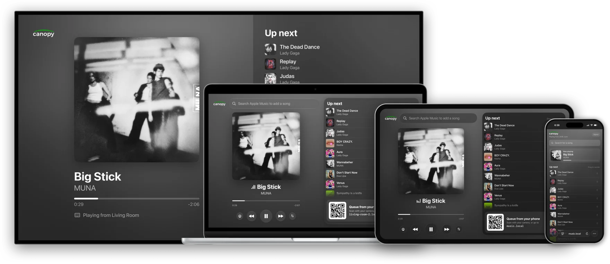

Install from the App Store or build it yourself with Xcode and an Apple Developer account. Free for noncommercial use.

Apple Music or Spotify
Pick a playlist from your library. Requests and your playlist share one list.
Host on iPad, Apple TV, or Mac
The big screen shows what’s playing, what’s next, and a QR code for guests to join.
Guests queue from their phones
Scan the QR code, search, add. No app or music account needed. Anyone can drag the list to reorder.
One party, every room
One device runs the party. Every other screen can join it.
The hub
An iPad, Apple TV, or Mac runs the party. It plays the music and keeps the queue, so put it where the speakers are.
Displays
Any other iPad, Apple TV, or Mac can join as a display. It shows what’s playing, what’s next, and a QR code, in another room or across the yard. The music still comes from the hub.
Phones
Guests scan any QR code, on the hub or a display, and add songs from their browser. No app, no account.
Playback
Canopy Music manages the queue. Playback options depend on your music service.
Apple Music
Canopy Music
The iPad, Apple TV, or Mac running the Canopy Music app plays songs on-device.
Device speakerAirPlay 2
Sonos
Your Sonos streams the songs with the Apple Music account linked in the Sonos app.
Any roomGroups
Requires Apple Music subscription.
Spotify
Spotify for Mac or Windows
The desktop app plays while it’s open, even in the background.
Device speakerSpotify ConnectAirPlay (macOS)
Sonos
Your Sonos streams the songs with the Spotify account linked in the Sonos app. No Spotify app needed.
Any roomGroups
Spotify for Apple TV
Works while the Spotify app is open on screen.
Device speakerAirPlay
Spotify for iPhone or iPad
Works while device is unlocked and the Spotify app is open on screen.
Device speakerSpotify ConnectAirPlay
Requires Spotify Premium and a one-time setup in Spotify’s developer dashboard.